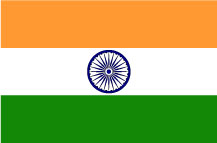
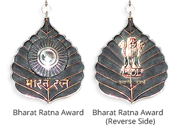

India never invaded any country in her last 100000 years of history.
Chess was invented in India.
The name 'India' is derived from the River Indus, the valleys around which were the home of the early settlers. The Aryan worshippers referred to the river Indus as the Sindhu.
India is the largest democracy in the world, the 7th largest Country in the world, and one of the most ancient civilizations
Algebra, Trigonometry and Calculus are studies, which originated in India.
National Flag of India
The Code of Conduct of the Indian National Flag, which has been dubbed as Flag Code of India, 2002 is an attempt to bring together laws, conventions, practices, and instructions for the guidance and benefit of everyone concerned.

National Anthem of India
The song Jana-gana-mana, composed originally in Bengali by Rabindranath Tagore, was adopted in its Hindi version by the Constituent Assembly as the National Anthem of India on 24 January 1950.
Bharat Ratna Award
India has produced a legacy of brave hearts since times immemorial. Probably there is not enough space to measure their sacrifices. However, we cannot close our eyes to those people who have made our country proud by excelling in their own fields and bringing us international recognition. Bharat Ratna is the highest civilian honour, given for exceptional service towards advancement of Art, Literature and Science, and in recognition of Public Service of the highest order. It is also not mandatory that Bharat Ratna be awarded every year.

Famous Places and their famous food
Place
Food
Punjab
Makke ki roti & sarso ka saag
Rajasthan
Dal Batti
Gujrat
Khandvi
Bihar
Litthi Choka
Odisha
Rasgulla
Maharashtra
Puran Poli
Move mouse here to know Why I Love India
"India shaped my mind, anchored my identity, influenced my beliefs, and made me who I am...India matters to me and I would like to matter to India.”